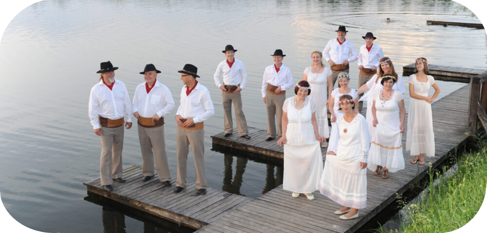

Cantate Domino
(Vokalna skupina iz Kočevja)
...
(Vokalna skupina iz Kočevja)

Vokalno skupino Cantate Domino iz
Kočevja je osnovalo sedem pevk in pevcev kočevskega župnijskega cerkvenega zbora oktobra 1989. Skupina, ki ves čas deluje
v mešani zasedbi, prepeva različne glasbene zvrsti: priredbe slovenskih in tujih ljudskih pesmi, slovensko in tujo sakralno
glasbo, posebno božične pesmi, maše, gospele, priredbe slovenskih in tujih popevk in narodno-zabavno glasbo. Njihova posebnost
je prepevanje starih kočevarskih pesmi v
jeziku Kočevskih Nemcev, ki so 600 let živeli na Kočevskem.